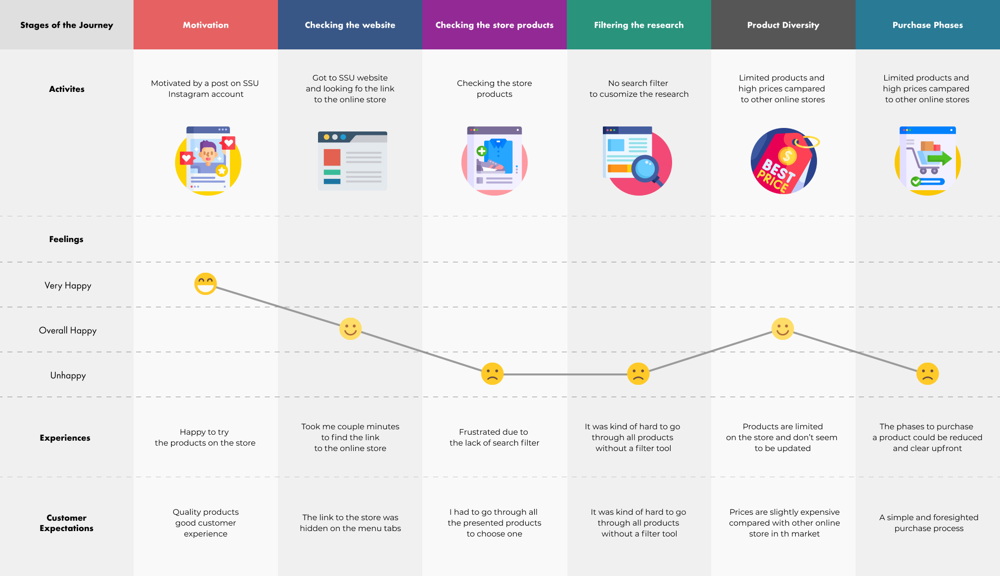
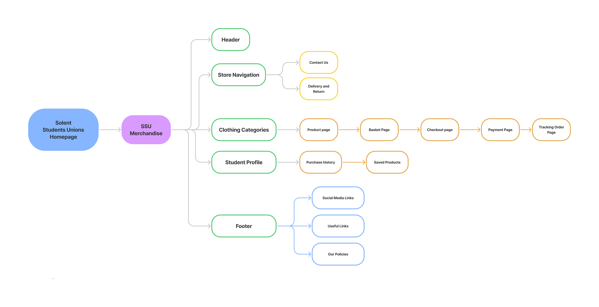
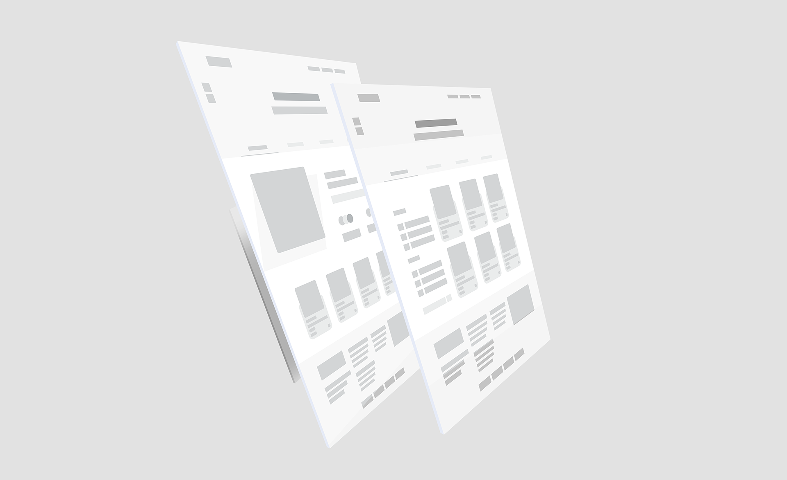
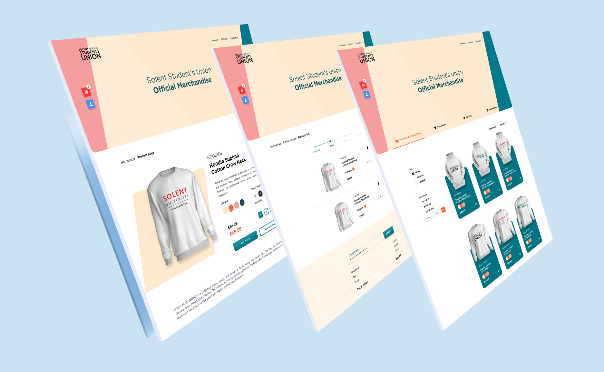

Student union (SSU. 2018) website is considered as one of the main portals designated to help students not only to discover offers and discounts, but also to help them get involved in the social environment throughout their studies at (Solent. 2005) university.
The website, on the other hand, has a number of flaws when it comes to the HCI (human computing interaction) aspects, making it weak in terms of accessibility usability, and various factors that concerns data protection regulation and ethics.
The focus on this case study will be given to the students' union online store, which is one of the source of revenue to the (SSU. 2018). The store according (Internet Archive. 2020) has not been renewed or updated for more than two years.
Therefore, this report will primarily focus on the process of detecting and analysing a number of issues related to the human computing interaction aspect. In this project, both approaches will be applied, UCD (User Centred Design) approach and TCD (Task Centre Design): the first one will be used to try to solve a number of problems from user's point of view. But at the same time and as explained by (Rosala, M.) in Norman’s design principles, TCD approach will be used as well to ensure the tasks on the (SSU. 2018) store are designed more efficiently to meet user's goals.
The aim is to develop a number of design solutions through high fidelity design and prototypes that will be tested by a number of students before submitting these solutions as suggestion to the current student union administration
. . .
Research & Insight:
Both online clothing store of University of Westminster Students' Union (UWSU. 2017) and (Brighton, SU. 2014) seem to be identical, that can be explained by the third part company that runs students union's online stores (Uni Wears. 2016). However, there’s a noticeable similarity when it comes to the HCI principle gaps, for instance the content structure, the search customisation, and the purchase process as well. Given that the two websites are managed by the same third part company (Uni Wears. 2016), both of them simultaneously share almost the same HCI gaps.
According to (Ambielli, B., 2020), there are fifteen human computing interaction
(HCI) principles that have been developed and used by a variety of researchers,
including Don Norman, Jakob Nielsen, Larry Constantine, and Lucy Lockwood, to
evaluate the digital design products.
The following principles as shown above will be used to analyse and detect the
HCI gap on the students’ union (SSU. 2018) online store.
There are numerous situations where the principles of HCI were not maintained
due to a lack of constant improvement and upgrading on the website (SSU. 2018).
However, as a part of the assessment requirements, the focus will be given to one
particular section on the website, which is the students' union clothing store.
. . .
Research Field —
During the research process, the two research methods quantitative and qualitative have
been used in order to discover and collect the most accurate data possible.
In the quantitative method, two particular surveys have been created, the first survey was
about the (SSU. 2018) website; in which students have expressed their desire to enhance the
quality of the presented services and information (SSU. 2018) on website.
Whereas, the second survey was mainly about the (SSU. 2018) online store, which is the
chosen part on the website to attempt making improvements on and solve its HCI issue.
Students have raised concerns about a variety of HCI problems, including the purchase
process, product selection, and the search filter. (The results are available in the appendix).
In addition to the quantitative method, the qualitative method has been used as well,
mainly to diversify the data source due to limited responses. In this method, two particular
interviewers have been given the current version of the (SSU. 2018) online store using the
inductive approach in order to highlight the user experience gaps when it comes to the HCI
side. (Transcripts available in the appendix).
The main reason behind using the inductive approach as explained by (Streefkerk, R., 2019) is
basically to give the interviewers enough freedom to explore the current version of the
website rather than structure his replies based on pre-planned theory or scenario.
Both interviewers have expressed their dissatisfaction about the overall usage of the online
store when it comes to the content organisation and the search filter. And most importantly,
one of the interviewers has mentioned the long-process of purchasing a product on the
store. Most of the issues discovered through the two methods can be classified as part of
HCI principles such as discoverability, accessibility, and structure as explained by
(Ambielli, B., 2020).
Therefore, the primary focus will be on the creation of new design solutions as an attempt to
solve the outlined issues above.
. . .
HCI GAPS —
Content Structure: One of the most visible problems on the main page is the lack of product categorisation based on available variants, such as hoodies and t-shirts. This disregards the structural concept as mentioned by (Ambielli, B., 2020) in Norman HCI principles, which in this situation requires the user to navigate through multiple goods in order to choose one specific item.
Search Filter and Customisation: At the same context, another issue linked with this is the search customisation where the user refines his search and includes several search choices such as price range and product sizes. However, the current version of the store simply provides a search bar on the top header, with insufficient accuracy.
Content Structure TCD: Another notable concern on the shop is the procedure of completing a purchase, which
has been broken into several sections. While it is feasible to combine and summarise
some of them, such as the shipping and payment stages, in order to shorten the process
and increase the probability of purchasing a product by a potential customer.
This HCI problem is part of the TCD process, which requires users to complete the main
task on the site more effectively and properly, which is the purchase of a product
Colour Contrast For Accessibility: The students’ union website has also a problem of accessibility, according to the (Color.a11y. 2015.). The website has failed in the colour contrast test as shown on the figure above. This shows that the accessibility aspect has not been taken into consideration as well as the style guide of (SSU, 2021) them. This raises concerns about consistency, which is one of the HCI's guiding principles.
GDPR cookies: The ethical issues are one of the privacy issues that concern users. A part of General Data Protection Regulation (UK government. 2018), the website provide a whole page of the data collection and ethics policy on the store. But at the same time, it doesn’t give the user a chance to accept or reject the amount of the collected data using pop cookies, similar to the example of Brighton university students union.
Empath map – Main persona - SSU member
The following empathy map is an estimation of what the main persona goes through during the usage of the (SSU. 2018) online store. The following map has been created based on the surveys responses and feedback of the two interviewers who tried the store.
. . .

Estimated customer journey map — SSU Online Store
The new suggested information architect as shown above is expected to simplify and easing the navigation and interaction among the store pages. Whereas, the current version that has different navigation branches, which delays the return process among the pages on the current desktop version.
Simplify the navigation process is expected to increase the time spent by users on the store, thus increasing the probability of purchasing an item by a potential user. But at the same time, the store's services will be offered in a more effective and efficient manner and ultimately decrease the time spent to complete a purchase on the store.
. . .
Design Implementation
Information Architect —

Information Architect map — SSU Online Store
The new suggested information architect as shown above is expected to simplify and
easing the navigation and interaction among the store pages. Whereas, the current
version has various navigation branches, which clearly delays the return process among
the pages on the current desktop version.
Wireframes —
The wireframe phase is one of the essential stages before moving to the high fidelity design stage; in which a number of design solutions have been created and tried before suggesting the final design solution.

Wireframes Samples — SSU Online Store
As shown on the figure above, the new design solutions were based on the issues
raised in the user analysis phase. This wireframe stage contributed to the
development and brainstorming of a variety of design possibilities influenced by
many design systems, most notably the Material design system (Material. 2014).
High Fidelity Designs —
A number of design solutions have been tried in this new design interface in order
to attempt to solve the highlighted HCI gaps as stated in the user and business
research phases.

High Fidelity Designs Samples — SSU Online Store
One of the concerns addressed was the content structure issue, in which the
presented products have been classified in to several categories, using a menu
tab designs to make exploring the item simple and easy for the customer.
Furthermore, a search filter has been placed beside each of the presented items
to allow customers to conduct an exact search for the required product based on
size, colour, and price.
Another significant HCI problem raised during the user analysis phase is the
accessibility of colour contracts, in which the current version has failed to pass
test on (Adobe Color. 2020) validator.
Throughout the process of designing the high fidelity version, the (SSU, 2021)
style guidance has been used as the main source and referance to create the
new colour palette of the store. The aim is to maintain (SSU, 2021) business
identity, but also to respect one of the main principles of HCI according to
(Ambielli, B., 2020) known as consistently.
As stated in the analysis, one of the observed HCI gaps was GDPR cookies, in
which the user was not given the opportunity to accept, reject, or even customise
the data gathered from him.
Thus, under the new design system, a pop-up message will appear to the user
once he visits the website to inform him about the data collection process up front
and to choose from the available options.
Furthermore, as stated in the task analysis phase, one of the key focuses of this
new design solution is to shorten the phases of completing a purchase.
Based on the analysis conducted in the user task section, the current steps of
completing a purchase on the store are six phases, and each one of them doesn’t
anticipate or give any ideation of the next stages. While the new design suggest
summarising several phases in one stage, so instead of six phases, now four
phases as follows:
Throughout the usability stage, the new design prototype have been given to the
same interviewers who tested the current version of the store. The goal was to
gather comments, suggestions, and various points of view from potential
customers. The new prototype focuses mainly on the scenario of purchasing a
product on the store.
The core of the new visual components are designed to encourage the user to
make a purchase on the store. And most importantly, summarise and simplify the
purchase process through merging several stages as stated in the user task
analysis section.
Browse available products
Select a product
Confirm the selected product (– Item details – Personal details – Shipping details)
Payment
Confirmation
Approach —
During the usability testing, the inductive approach as explained by () was used to test the new design prototype
The aim behind using this approach is basically to give the interviewers enough
freedom to discover the prototype of the store and most importantly not to frame
their responses based on pre-planned theory or scenario.
However, a basic explanation about the user task has been given to the
interviewers in order to put them in the context of the project.
The collected data has been analysed through focusing on the keywords used by
the interviewers in their transcripts in order to categorise them and provide
comprehensive results.
Overall and based on the analysis of the interviewers transcripts, both of them
have expressed their positive feedback about the new design prototype.
All of them were pleased, mainly by the new content structure and the process of
selecting an item on the store. In addition to this, one of the interviewers was
satisfied with is the product page where details were included organised manner
compared with the current version, such as sizes, colours, and quantities.
But on the other hand, there were few notes mentioned one of the purchase
phases, particularly the third phase where the customer is required to confirm the
chosen item. This phase contains several sections such as Item details – Personal
details – Shipping details. However, the second interviewer has stated that he
didn't notice there were other sections on this page. Therefore, interviewer
suggested using some visual elements to anticipate the following steps in this
particular phase.
Conclusion & Future Developments
The new design has attempted to solve a number of problems that concerns the
HCI, particularly from the UCD point of view, such as the problem of content
structure, accessibility, and findability; which all of them are considered as an
important part of the HCI principles as explained by (Ambielli, B., 2020)
Whereas, from the TCD, there was an attempt to make the main task on the site
which is purchasing a product more efficient and simple with a view to encourage
the potential user to make a purchase on the store.
One of the suggested solutions on the store is the pre-demand feature; in which
the products will be prepared by demand and shipped to the customer once the
purchase is being confirmed. This can be done be a third party company such as
(Printul. 2013), Moreover, this will take care of all the production and shipping
process, and it will increase the value and variety of products on the store, and
ultimately increase the total revenue.
However, the identified problems on the store are not the only issues.
Thus, this should be considered as a start of an ongoing development to the store
in order to maintain its value and grow its total revenue in the long run.